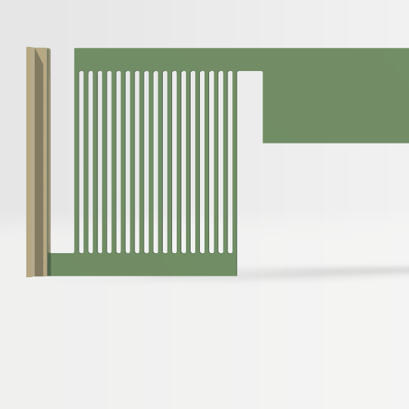
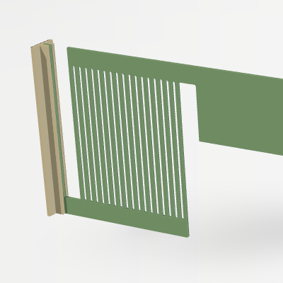
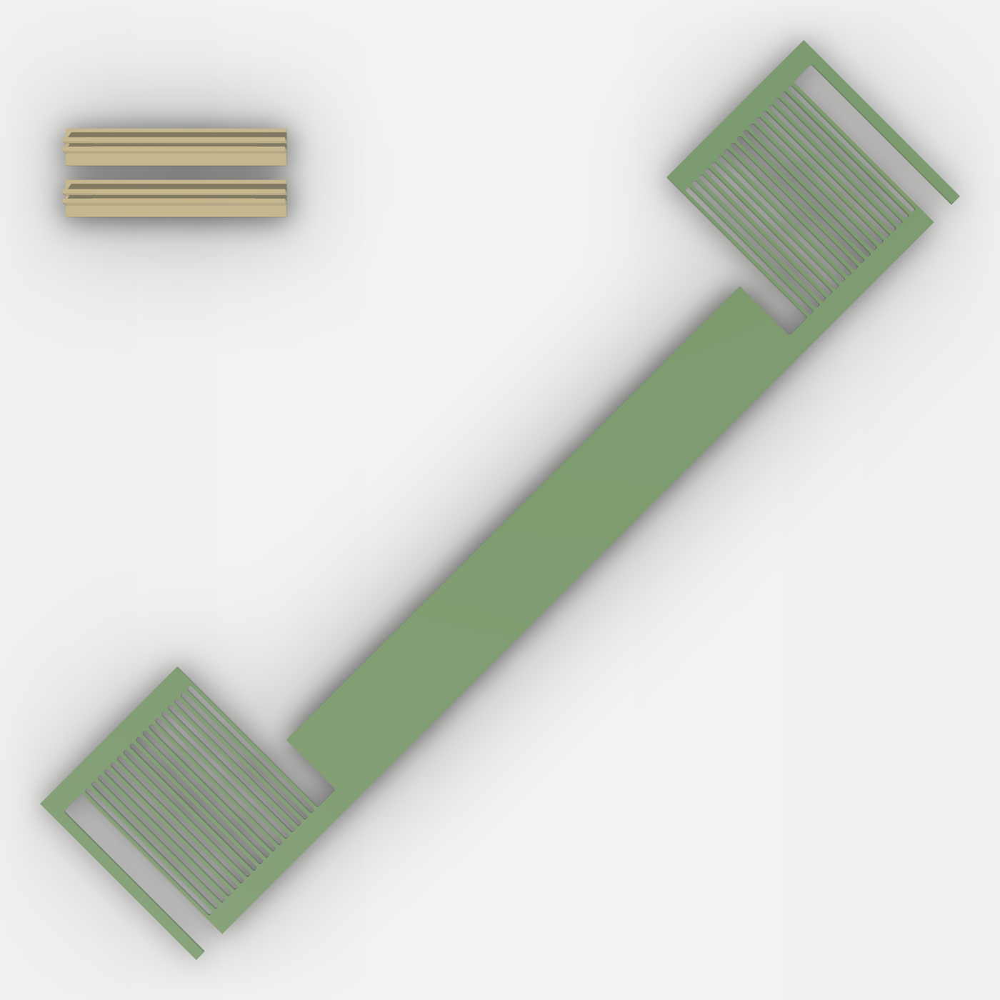

Tea Bag Drawer Divider
A spring-loaded wall that stands across a kitchen drawer to keep tea bags sorted. No glue, screws or tape: a spring at each end pushes a pad against the drawer's side walls, and it pops out when you want to move it.
Drag to turn it, scroll or pinch to zoom.

Springs at the ends
Each end of the 1.2 mm wall is a set of 18 thin beams cut into the same sheet. They squeeze 3 mm per end, and parallel links slide the pads straight in so they don't tilt.

Pads clip on
Two T-pads slide down onto the end posts and press flat against the drawer walls. A 0.05 mm press fit grips them; the clip's ends are looser so they start on easily.

Prints flat
The wall prints flat on the diagonal, corner to corner, with the pads face-down in the free corner. No supports. The ready-made parts suit a 290 mm drawer.
Printing and files
Download divider_plate.3mf and open it in Bambu Studio. It is a ready-to-slice project for the X2D: Bambu PLA Matte, 0.20 mm layers, 3 walls, 25% gyroid, no supports. About 23 minutes and 15 g.
For another drawer width, use the OpenSCAD script: drawers 150 to 295.5 mm wide fit on a 256 mm plate. The ready-made profile is 290 mm.
Exact geometry for remixing: divider.step, or the source in the repository.
The middle is open below a 25 mm top strip, which keeps it light and lets it span the drawer without bowing. Anything shorter than about 35 mm, like a tea bag lying flat, can slide underneath.